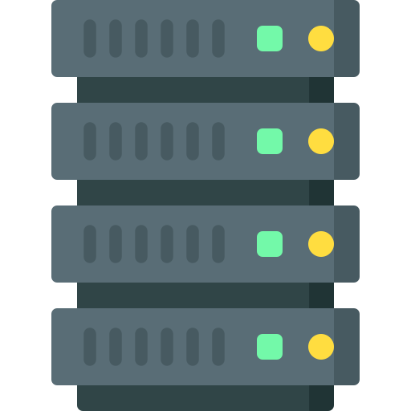

◈
◆ Your connections
Your locationdetecting…
Servers linked—
Best ping—
Median ping—
◈ Network status
Tests reported—
Locations—
Median download—
Median ping—
Window24 h
Legend
testers ≥100 Mbps
50–100 Mbps
25–50 Mbps
10–25 Mbps
<10 Mbps
hop point (native tools)

test servers — colors in ◇ SERVERSyour live ping link